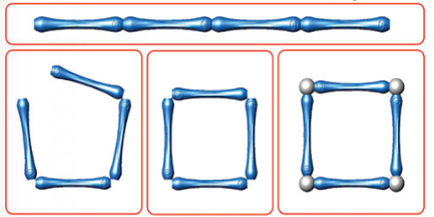
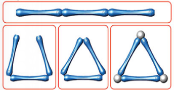

Do It! Goobi: Dividing 2D Shapes
 The Challenge
The Challenge
Your challenge is to use Goobi pieces to build and explore two-dimensional (2D) shapes. You will construct different sized rectangles and squares, and partition them into equal parts. Then, you will find the fraction of each partitioned part. Finally, you will make additional 2D shapes and decide if you can partition them into equal parts and determine the fraction.
Project Steps
-
Build Polygon Examples
-
Build and Partition a Square
-
Build and Partition a Rectangle
- Build, Partition, and Measure Other Shapes
Build Polygon Examples
Build polygon examples using the Goobi pieces. Try building a square, rectangle, triangle. What other polygons can you build?


Now, practice dividing the shapes up into equal parts.
Build and Partition a Square
- Build a square using eight bars. What object could it represent? Why might you need to partition it?
- Use two bars and a ball to partition your square into two equal parts. Count the equal parts and write each fraction. (Each part is ½ of the square.)
- Partition your square from Step 1 into four equal parts using two more bars. Count the equal parts and write each fraction. (Each part is ¼ of the square.)
- Take a picture of the square that has been partitioned into four equal parts.
Is there more than one way to partition the square to show each fraction? Try it! If you find a new way, take a picture of it.
Build and Partition a Rectangle
- Build a rectangle that has two sides that are two bars long and two sides that are four bars long.
- Use two bars and a ball to partition your rectangle into two equal parts. Count the equal parts and write each fraction.
- Partition the rectangle two more times to make 4 equal parts and eight equal parts.
- Take a picture of your rectangle that has been partitioned into two, four, and eight equal parts.
Is there more than one way to partition the rectangle to show each fraction? Try it! If you find a new way, take a picture of it.
Build, Partition, and Measure other Shapes
- Use different numbers of bars. Make new squares and new rectangles or a different polygon.
- Use more bars to partition the shapes into equal parts. Can you make equal parts?
- Count the parts. Try to divide the shape into thirds, fifths, and sixths.